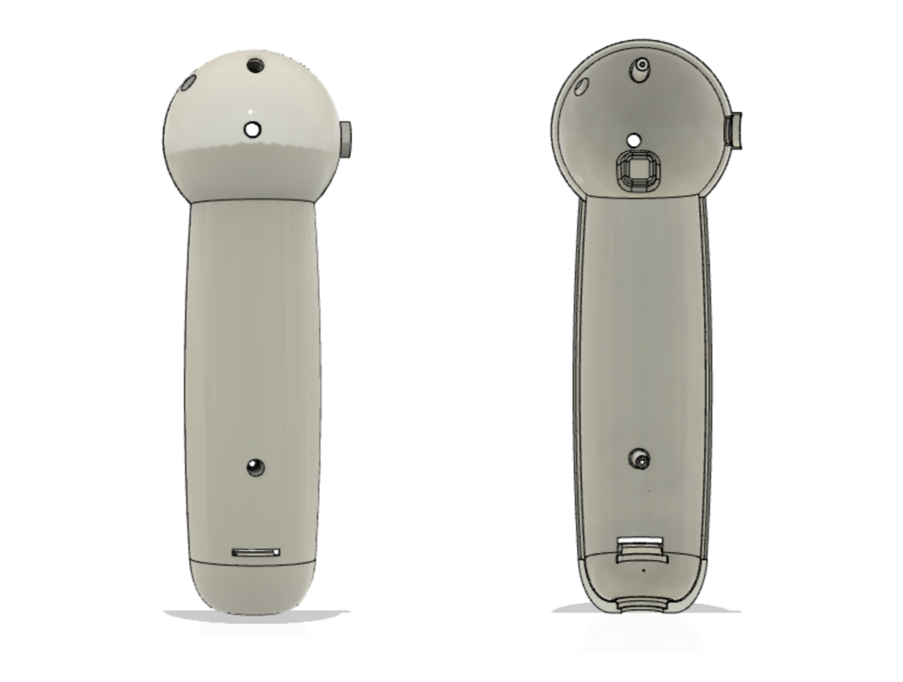

Cystoscope
This project's goal was to create a patient friendly and low cost cystoscope manufacturable through injection molding allowing procedures to minimize anestesia risk by keeping the patient awake.
Date: Fall 2020
Institution: Duke University
Coruse: Advanced Manufacturing and Prototyping
Skills: Design for Injection Molding, FEA Analysis, Photoshop, 3D Modeling (Fusion360), Animation, Rendering, LBM Estimation


Interactive 3D Model
Left Click to Rotate | Scroll to Zoom | Right Click to Pan
Cystoscopy is a medical procedure that allows doctors to inspect and operate the inside of the bladder. A rigid cystoscope is the instrument used for the procedure in most cases.
Rigid Cystoscopes Include:
- A camera component
- An electrical connection system
- A rigid sheath component
- A in/out water flow control system and provision connection
How Available Rigid Cystoscopes Look Like:

Female Procedure Overview:

Male Procedure Overview:

PART 1: Widget — Photon Engine
A 3D printed widget and a caliper were mailed to us to first, make an sketch to scale. The drawings were made in 3rd angle projection (ASME).
Technical Sketch:

Technical Drawing:

Later to be modeled in Autodesk Fusion360, and redesigned to fit and be secured inside a cystoscope that we would also need to design.
Widget Rendered Animation:

Widget Mock Up:

Redesign of Widget For Injection Molding:

PART 2: Cystoscope Design
Requirements:
- Must accommodate securely, mount and protect the widget
- Must provide an in/out water connection
- Must provide provision to control water in/out flow
- Must accommodate 24F sheath 20 cm in length
- Must suit left or right handed use
- Must accommodate a 3 pole electrical connector
- Must be manufacturable through injection molding
Moodboard:
“Non-scary cystoscope that would be used while the patient is awake”

Inspiration Sketches:


Technical Drawings:


Injection Molding Features Close Up:

Render of Final Model:

FEA Analysis:

3D Printing of Prototype:

Physical Prototype: